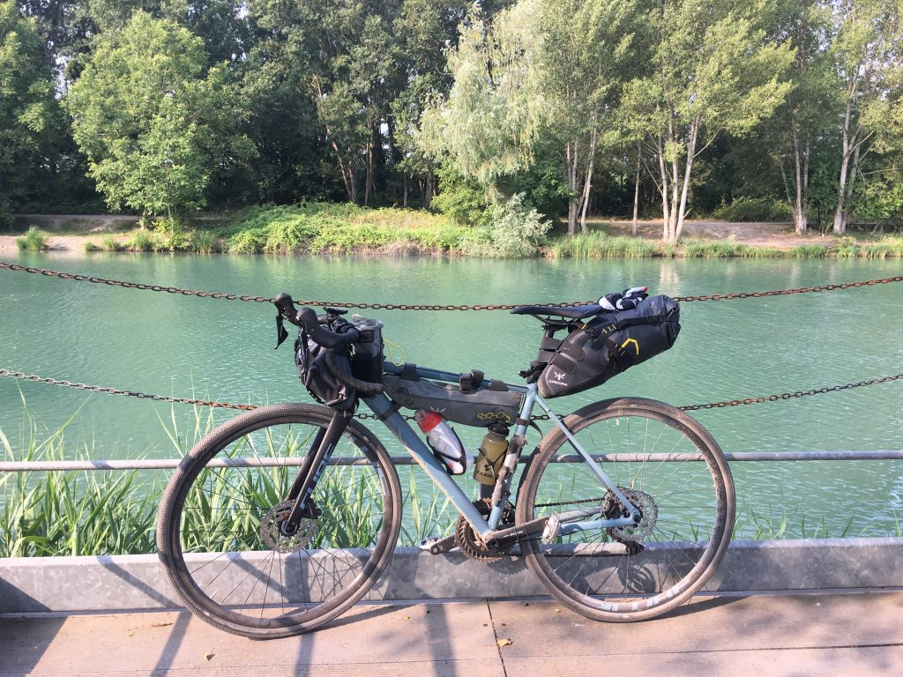
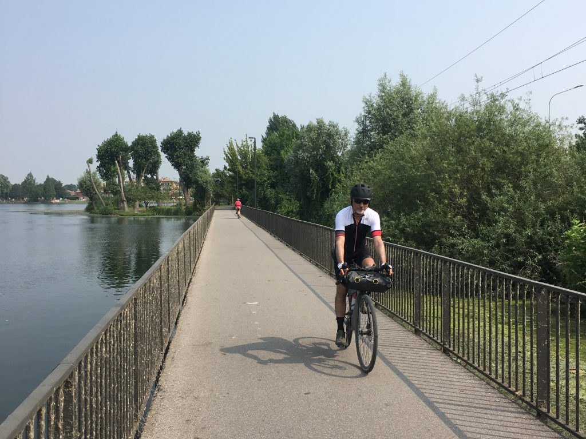

Gardamare Tappa 1 #
La Pista Ciclabile del Mincio da Peschiera del Garda a Mantova, dove il cuore si spalanca inaspettatamente

Che in questo viaggio il cuore si sarebbe spalancato me lo aspettavo, ma che sarebbe successo dopo i primi 3km, ecco questo mi ha sorpreso.
La partenza #
Sono partito alle 7.30 dopo una notte molto tranquilla all’agriturismo Le Sigalette a Salionze, pochi km da Peschiera, gestito da una famiglia sorridente e disponibile. Una discesa di pochi metri immette da lì direttamente sulla ciclovia a fianco del Mincio. È tutto facile e tutto chiaro, bisogna solo pedalare e respirare.
Qui e ora #
La ciclovia segue il fiume, che in quella zona alterna dighe e modifiche del letto fino a stabilizzarsi. Ci sono punti di solitudine assoluta e fresca ombra, dove acqua, ruote e respiro seguono un solo tempo è un solo ritmo. Ed è proprio lì, che all’improvviso tutto diventa dolorosamente perfetto. Sono completamente qui e adesso, è una nuova felicità che si infrange contro un’assenza che sto cercando di proteggere dallo scorrere del tempo. È una resistenza nella resilienza, ma è un muro fragile che viene giù davanti a un istante di bellezza assoluta. È un grande momento liberatorio di cui avevo bisogno.
Valeggio e il Chiosco dei Mulini #
Borghetto di Valeggio sul Mincio, dove arrivo dopo una decina di km, è una perla. Vorrei fermarmi a visitarlo meglio ma ho paura che arrivi il caldo e preferisco proseguire. Mi fermo un attimo a fotografare lo splendido punto in cui il fiume e la ciclovia passano sotto l’arco e proseguo subito.
Decido però di fermarmi qualche minuto in più per far scorta d’acqua fresca al Chiosco dei Mulini a Volta Mantovana, un delizioso punto di ritrovo per gli anziani mattinieri (anche ciclisti in buon numero), ma dove probabilmente la sera l’età media si abbassa vertiginosamente. Io che sto nel mezzo tornerei volentieri per un bell’aperitivo, ma devo proseguire.
Da lì in poi il percorso si fa un po’ noioso e comincia a far caldo. Per fortuna è ventilato anche se controvento, ma va benissimo così. Appena infatti mi fermo per bere la calura stordisce, e non sono neanche le 10.
Things happen for a reason #
Tiro dritto verso Mantova, mi ero fatto male i conti e il percorso non sarà di più di 40km, che come prima tappa ci può stare. E Mantova mi accoglie con un bellissimo tratto che costeggia il Lago di Mezzo, uno dei tre laghi formati dal Mincio che bagnano Mantova.

La prima tappa è andata, ho evitato il caldo eccessivo e ora mi riposo all’Agriturismo Beatilla, un posto dove all’ingresso trovo una scritta che dice “Things happen for a reason”.
E mi chiedo se sia vero.